Lesson 4 · Part 1 · The model · 5 questions
Prompt caching
Read first: Tokens and the context window, Reading fast, writing slow
Every time an agent takes a step, it sends the whole conversation to the model again. Prompt caching lets the provider reuse the work it already did on the unchanged start of that conversation, which makes long agent sessions several times cheaper and faster.
The idea
Picture a book club with a strange rule: before each meeting you must re-read the book from page one, then read the new chapter. That gets slow by chapter 20. So you keep notes on everything you've already read, and only read the new chapter properly.
There is a catch. If someone changes a sentence on page 3, your notes from page 3 onwards are useless, because everything after it might read differently now. You keep only the notes up to the first change.
A model API works like that book club:
- The API remembers nothing between requests. Each request sends everything: the tool list, the system prompt (the instructions at the start), and every message so far. Step 40 of an agent session sends steps 1–39 again.
- Reading the prompt is real work. For every token, the model computes internal data it needs to write the answer (the "KV cache", explained in Reading fast, writing slow).
- The provider can keep that data for a few minutes. If your next request starts with exactly the same bytes, it reuses the saved work up to the first byte that differs. That is a prefix match: only the unchanged start counts.

The order matters: tools first, then the system prompt, then messages. A change near the top throws away everything below it. A new message at the bottom throws away nothing. That is the normal, cheap case.
Up close
Here is a request with caching on, using Anthropic's Python SDK. The usage fields tell you what happened:
resp = client.messages.create(
model=MODEL,
max_tokens=2000,
# cache everything up to the
# last block, moving each turn
cache_control={
"type": "ephemeral"
},
system=SYSTEM_PROMPT,
messages=history,
)
u = resp.usage
# saved to the cache this time
print(u.cache_creation_input_tokens)
# reused from the cache
print(u.cache_read_input_tokens)
# read at full price
print(u.input_tokens)On Anthropic's API (other providers differ in the details):
- Reading from the cache costs about a tenth of the normal input price, and even less on some newer models.
- Writing to the cache costs a bit more than normal: 1.25 times for the default 5-minute lifetime, 2 times for a 1-hour lifetime. Every cache read resets the timer.
- Short prompts aren't cached. Below a minimum length (512 to 4,096 tokens, depending on the model) nothing is saved, and there is no error. You just see
cache_read_input_tokensstay at 0.
Other providers cache too, some fully automatically, and open-source model servers do the same thing (often called "prefix caching"). The prefix rule is the same everywhere, because it comes from how models read text.
What breaks the cache
| Change | What must be re-read |
|---|---|
| New message at the end | Only the new message |
| Timestamp in the system prompt | System prompt and all messages |
| Tool added, removed or reordered | Everything |
| Switch to another model | Everything (each model has its own cache) |
| Edit an old message | That message and all after it |
| Pause longer than the lifetime | Everything |
Watch for invisible changes too: JSON with keys in a random order, or a request ID in the prompt. The text means the same, but the bytes differ.
Worked example
One step of an agent session sends 100,000 tokens. 97,500 of them are the same as the previous step, and 2,500 are new (the last tool result and the reply). Count cost in "full-price tokens":
| Without cache | With cache | |
|---|---|---|
| 97,500 old tokens | 97,500 | × 0.1 = 9,750 |
| 2,500 new tokens | 2,500 | × 1.25 = 3,125 |
| Total | 100,000 | 12,875 |
About 8 times cheaper per step, and the reply starts sooner, because the model skips re-reading. Over a 40-step session, that is the difference between a tool your company can afford and one it can't.
Your turn
Question 1 · ~2 min
You add Current time: 14:32:07 to the top of your agent's system prompt, so it always knows the time. What happens to the cost of each step?
Show answer
It goes up a lot. The time changes on every request, and it sits near the very start of the prompt. So every step misses the cache for the system prompt and the whole conversation, and pays full price for all of it. Put the time in the newest message instead, or leave it out.
Question 2 · ~2 min
To save tokens, your harness adds the database tool only when the task mentions SQL, and removes it otherwise. Good idea?
Show answer
Usually not. Tools come first in the prompt. Each time the list changes, everything after it, including the whole conversation, must be re-read at full price. A fixed tool list that is cached is cheaper than a short list that keeps changing.
Question 3 · ~2 min
You leave a long agent session for 15 minutes to get coffee, then type "continue". The first reply is slow and costs more than usual. The next ones are fast again. Why?
Show answer
The cache expired. The default lifetime is 5 minutes, and nothing used the cache while you were away. The first request re-read the whole conversation at full price and saved it again. The ones after that hit the new cache. A 1-hour lifetime avoids this, at a higher price for writing.
Question 4 · ~3 min
To save money, you switch a long session from the big model to a small one for "easy" steps, then switch back. The bill goes up instead of down. Why?
Show answer
Each model has its own cache. Every switch means the other model reads the whole conversation at full price. That can cost more than the cheaper model saves. A better way: give the easy job to a separate helper agent (a subagent) with its own short context, and keep the main session on one model.
Question 5 · ~3 min
Stretch: your harness shortens long tool outputs from 30 steps ago, a little on every step, to keep the context small. Why can this cost more than doing nothing?
Hint
Show answer
Each edit sits in the middle of the conversation, so everything after it is re-read at full price on every step. You save some tokens but lose the cache for most of the conversation. If you must shrink the context, do it rarely and all at once, then let the cache build up again. That is how "compaction" (summarising the conversation) is designed to work.
Interesting fact: A cache built like an operating system
In 2023, researchers at UC Berkeley released vLLM, an open-source server for running language models. Its key idea, PagedAttention, borrows a trick from operating systems: instead of keeping each request's KV cache in one large block of GPU memory, it splits it into small fixed-size pages, like virtual memory. Their paper reported 2–4 times higher throughput than the best systems of the time. The same pages made prefix caching cheap: vLLM identifies each page by a hash of its tokens and all the tokens before it, so two requests that start the same way simply share pages.
Facts checked: November 2026 (Anthropic API docs; vLLM paper and docs).
Answers
- Question 1
It goes up a lot. The time changes on every request, and it sits near the very start of the prompt. So every step misses the cache for the system prompt and the whole conversation, and pays full price for all of it. Put the time in the newest message instead, or leave it out.
- Question 2
Usually not. Tools come first in the prompt. Each time the list changes, everything after it, including the whole conversation, must be re-read at full price. A fixed tool list that is cached is cheaper than a short list that keeps changing.
- Question 3
The cache expired. The default lifetime is 5 minutes, and nothing used the cache while you were away. The first request re-read the whole conversation at full price and saved it again. The ones after that hit the new cache. A 1-hour lifetime avoids this, at a higher price for writing.
- Question 4
Each model has its own cache. Every switch means the other model reads the whole conversation at full price. That can cost more than the cheaper model saves. A better way: give the easy job to a separate helper agent (a subagent) with its own short context, and keep the main session on one model.
- Question 5
Each edit sits in the middle of the conversation, so everything after it is re-read at full price on every step. You save some tokens but lose the cache for most of the conversation. If you must shrink the context, do it rarely and all at once, then let the cache build up again. That is how "compaction" (summarising the conversation) is designed to work.